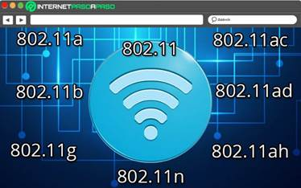

Uno de los estándares de redes más importantes es el modelo OSI (Open Systems Interconnection), el cual fue desarrollado por la Organización Internacional de Normalización (ISO, por sus siglas en inglés) en la década de 1980. Este modelo proporciona una estructura para el diseño de redes que consta de siete capas, cada una con una función específica. Las capas son: física, enlace de datos, red, transporte, sesión, presentación y aplicación. Cada capa proporciona un conjunto de servicios a la capa superior y utiliza los servicios de la capa inferior para lograr su función. El modelo OSI es un estándar de facto para la comunicación de redes y es utilizado por muchos fabricantes de dispositivos de red.
Otro estándar importante en la tecnología de redes es el Protocolo de Internet (IP, por sus siglas en inglés). IP es el lenguaje común que se utiliza para la comunicación de datos en Internet y se encarga de la transmisión de paquetes de datos de un dispositivo a otro. El protocolo de IP tiene dos versiones principales, IPv4 e IPv6. IPv4 es el protocolo más antiguo y utiliza direcciones de 32 bits para identificar los dispositivos en una red. Sin embargo, debido al creciente número de dispositivos conectados a Internet, las direcciones IPv4 se están agotando rápidamente. IPv6, por otro lado, utiliza direcciones de 128 bits y puede acomodar un número mucho mayor de direcciones.
El protocolo de control de transmisión (TCP, por sus siglas en inglés) es otro estándar importante en la tecnología de redes. TCP es responsable de garantizar que los datos se transmitan de manera confiable, ordenada y sin errores en Internet. Utiliza un sistema de confirmación de recepción para asegurarse de que los datos se entreguen correctamente y en el orden correcto. El protocolo de control de transmisión también se utiliza con el protocolo IP, ya que IP no garantiza la entrega de datos.
El protocolo de control de acceso al medio (MAC, por sus siglas en inglés) es otra especificación técnica importante en la tecnología de redes. MAC se utiliza en redes de área local (LANs, por sus siglas en inglés) para controlar el acceso de los dispositivos a la red. Es responsable de asignar direcciones únicas a cada dispositivo en la red y de garantizar que solo los dispositivos autorizados puedan acceder a la red. MAC se utiliza en conjunto con el estándar Ethernet, el cual es el protocolo de LAN más común en la actualidad.
El protocolo de transferencia de archivos (FTP, por sus siglas en inglés) es otro estándar importante en la tecnología de redes. FTP se utiliza para transferir archivos entre dispositivos en una red. Permite a los usuarios descargar y cargar archivos desde y hacia un servidor FTP en Internet. FTP utiliza un servidor FTP para alojar los archivos y permite a los usuarios acceder a los archivos mediante un cliente FTP.
Otro estándar común en la tecnología de redes es el Servicio de Nombres de Dominio (DNS, por sus siglas en inglés). DNS es responsable de convertir los nombres de dominio, en direcciones IP, como 192.168.0.1, que los dispositivos de red pueden entender. DNS es vital para la navegación web y otras aplicaciones que utilizan nombres de dominio para acceder a recursos en Internet.
Finalmente, es importante mencionar el estándar IEEE 802.11, que se utiliza para redes de área local inalámbricas (WLANs, por sus siglas en inglés). Este estándar especifica los requisitos para la transmisión inalámbrica de datos, voz y vídeo en una red WLAN. Los dispositivos WLAN, como los routers inalámbricos, los puntos de acceso y los dispositivos de usuario, deben cumplir con los estándares IEEE 802.11 para garantizar la compatibilidad y la interoperabilidad.
los estándares de redes en la tecnología de la información son esenciales para garantizar la interoperabilidad y la compatibilidad entre los dispositivos. Estos estándares proporcionan las especificaciones técnicas necesarias para el diseño, implementación y mantenimiento de redes efectivas y eficientes. Los estándares OSI, TCP/IP, Ethernet, DNS y IEEE 802.11 son algunos de los estándares más comunes en la tecnología de redes y son utilizados en todo el mundo para la comunicación de datos, voz y vídeo. Es importante que los profesionales de la tecnología de la información comprendan estos estándares y cómo se aplican en la implementación de una red efectiva.